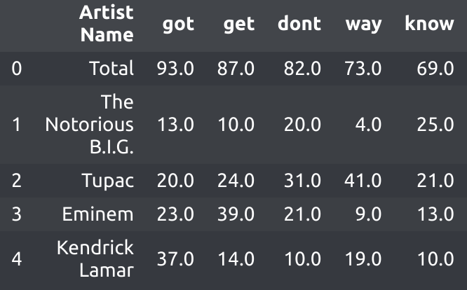
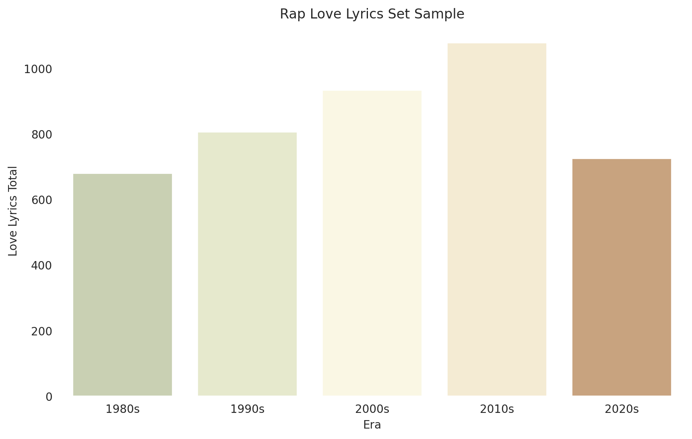
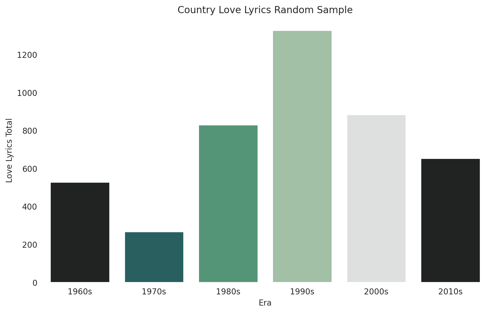
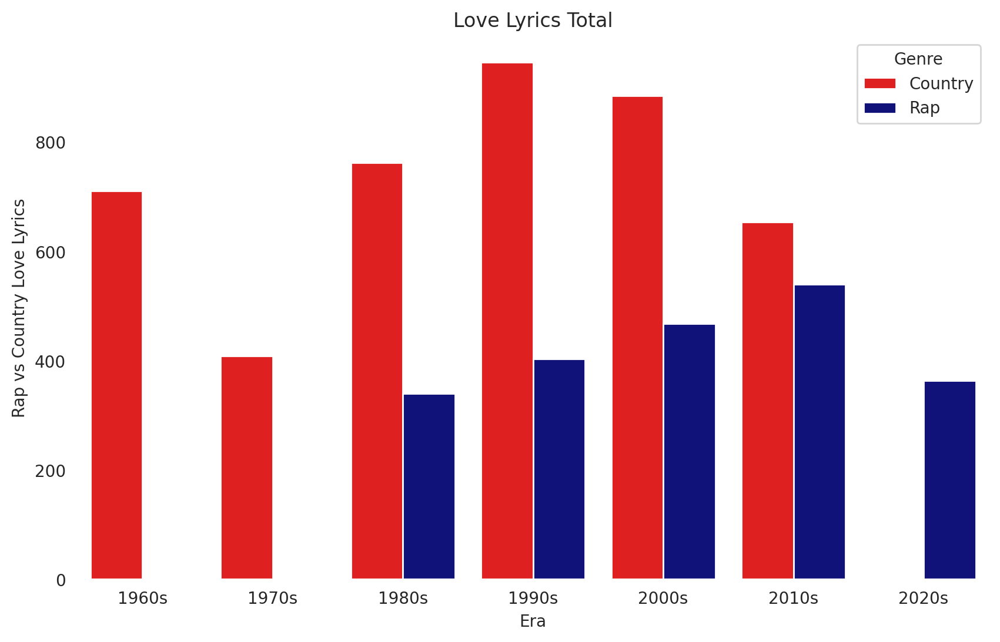
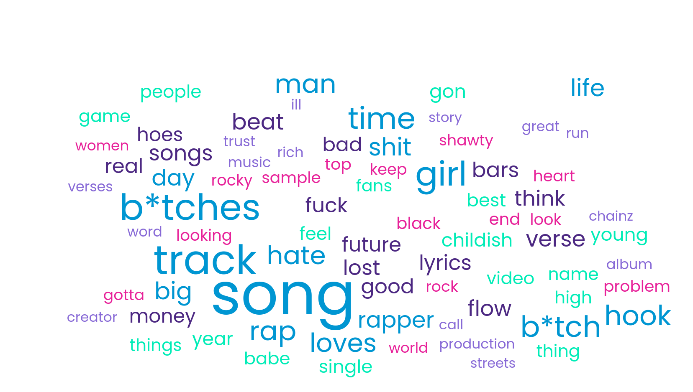
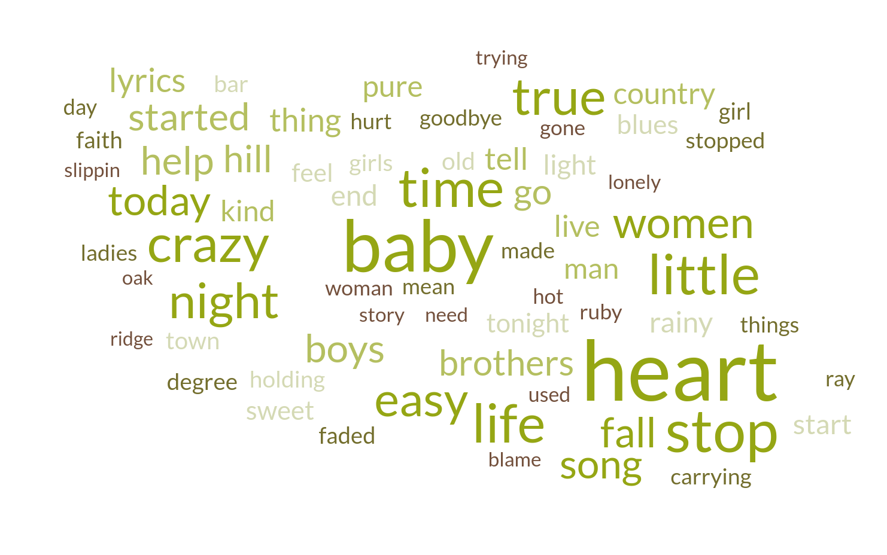

On my way to becoming a data scientist I stated a Udemey course, half way through I had a mini projects as a capstone that required me to clean, organize, and analyze data to draw a conclusion. Why it took me 20 min to complete it left an impact on my curiosity. The capstone was not enough I wanted to do something bigger, new, and a specific thought I have had for a while. Where is the love in music?
This article was inspired by Trucks and Beer, and The Largest Vocabulary In Hip Hop. Special thanks too (Chris) Kyungchan Im for additional help.
Arguably one of the greatest songs in 2003 was "Where Is the Love?" by the Black Eye Peas. A song that literately asked the question where did the love of the world go? I wonder if the use of love and what was loved in rap/hip-hop and country music has changed over the eras. The hypothesis I am using is that the use of the word love will decrease and will center around loving Woman, Alcohol and Money for rap/hip-hop. I then will compare this to the contrast in the form of country music which the prediction I am using will also have the word love decreased over the eras and will center around loving Alcohol, Woman and God.
Rap/Hip-Hop Predictions:
- Decrease use of love over time
- Woman, Alcohol and Money
Country Predictions:
- Decrease use of love over time
- Alcohol, Woman and God
Disclaimer: Music is clearly subjective and has a range of influences from culture and time periods. This analysis is in no way proving that one music genre is better or worse then the other
If you don't want to read all the nerdy stuff about Data Science skip to the Results section. I wont judge :)
Collecting the top 100 rappers and 100 country artist from the site Ranker.com then added about 30 more from my personal favorites and artist that are currently popular. Then divided the artist among different eras ranging from 80s to 20s for rap and 60s to 20s. Its obvious the 20s are not completed yet but I will be using it to predict how the 20s will look relative to this report. I used chatGPT to help define the eras of each artist and johnwmillr python wrapper for the Genius API to collect the top 25 song lyrics per each artist.
After cleaning the data using pandas and numpy python extensions. I was able to organize the data by lines of lyrics containing the words love, loved, loves, loving, lover, lovers. Then separating the words into tables where the Y axis repersents the artist and the X axis repersents the word and its frequency. Example below
This process of collecting lyrics for 25 songs form 250 artist took multiple days to collect, as the API would occasionally crash. This table along with the era of each artist gave me enough data to draw conclusions about love use and context. And even draw analysis that are not related to love such as swears, lyrical complexity, and use of hate!
Use of the word love in Rap lyrics over the eras given a data set 20 artist per era. This includes (Loves,Loved,Loving ect.)
Other Generations
This graph shows a pattern of the use of love increasing by eras with a sudden drop in the 2020s
Use of the word love in Country lyrics over the eras given a data set 20 artist per era. This includes (Loves,Loved,Loving ect.)
This graph shows a strange pattern with a median amount of love in the 60s, a drop in the 70s, then an increase to the peak in the 90s, with a steady decline.
Now lets see how the graphs compare to eachother
The contrast between the two are surprising as there is an incline with rap love use and a decline with country love use with both almost being equal in 2010s. This graph could give the idea that rap could out pace country in love lyric use in the future.
Rap/HipHop didn't become invented until the 1970s and didn't see a large quantitative amount until 1980s. I could also not find enough 20s country artist to add to 20s era
Now to answer the question "Where is the Love"
Rap Bubble
These where the counts for the inital predicitons categories:
Woman(630) = B--tches (154) + girl (141) + b--tch (119) + hoes (67) + babe (59) + shawty (47) + women (43)
Alch(0) = 0
Money(148) = Money (67) + rich (42) + chainz(s) (39)
These where the actual top word categories :
Music(1018) = Song(s) (169+79) + Track (178) + rap (109) + beat (84) + verse (83) + flow (80) + bars(77) + lyrics (75) + music (42) + album (42)
Woman(630) = B--tches (154) + girl (141) + b--tch (119) + hoes (67) + babe (59) + shawty (47) + women (43)
Miscellaneous(Over 148)
While Baby can also refer to a man, description, or an actual baby its highest use is a female pet name
Country Bubble
These where the counts for the inital predicitons categories:
Woman(461) = Baby (168) + Wom(a)n (100+45) + Girl(s) (51+49) + Ladies (48)
Alch(51) = Bar (51)
God(0) = 0
These where the actual top word categories :
Woman(461) = Baby (168) + Wom(a)n (100+45) + Girl(s) (51+49) + Ladies (48)
Time and Existence(455) = Life(124) + Night(113) + Today(94) + Live (67), Tonight (57)
Brotherhood/Masculinity(226) = Boys (81) + Brothers (80) + Man (65)
Note: Bars in rap and country mean totaly different things
Starting with what was loved in rap/hiphop, music was the highest category. While initially loving music and what makes music doesn't come to mind when thinking about what rappers and hiphop artist love. It makes more sense when checking really paying attention to the lyrics. There are also a lot of mentions of love songs, love tracks, “love the beat” seen in hiphop/rap lyrics. It was also interesting to find that alcohol didn't come up among the top 36ish most loved lyrics. But with further consideration I can't think of a single rap/hiphop song where that was the subject.
Women for both genres makes perfect sense as it's common knowledge to assume the majority of music is centered around love and in addition both genres are very male driven.A changing trend. My predictions were determined using a surface level bias where I asked a country enjoyer and a rap enjoyer what categories the other genre would love most. In this prediction the country lover was wrong for 2/3 of the categories and generally incorrect about rap average love count declining.
On the country side the predictions also yielded 1/3 options correct. With the prediction on the use of love in country music declining being correct. It was interesting to see God or Christian related things not show up under the love aspect.I don't listen to country but God, Trucks, and Beer seems to be a stereotype. This means one of two things: religious lyrics are not popular in the top songs as we are using the top 25 songs from the top 100 country artists. Or the sentence structure where God or Christianity is contained in does not contain the word love or its siblings (loves,loved ect.). The code I wrote to define a word as loved, that word needs to be in a sentence that has the word love. Time and existence category is most likely from country music More modern country being themed around farming and a rural lifestyle. The brotherhood category was also interesting to see become frequent.
One possible error would be the genuis lyric api wrap I used. There would be times the api would not just take the lyrics of the song but reviews of said song. If sentences in this review contained love it would attribute to the word count. I estimate about 10% of all songs pulled had a comment as it was frequent in some artist but non existent in others. So around 120 comments in rap and 100 in country. While not a huge effect one comment I caught was a whole essay. The impact seems unclear and I dont want to go through all the lyrics for 2200 songs to find comments. Next time there would have to be some precautions added to API to prevent this next time.
This project was a fun way to put use to and expand my current data science knowledge. Using problem solving to collect, clean, organize and analyze data. I hope this will be not just a paper to show my skills to potential employers, but inspire other beginner data scientists as I was.
If you enjoyed my paper please check out my website where I have lots of Computer Science and Data Science projects. Also infomation on myself, resume and photography.
My Website